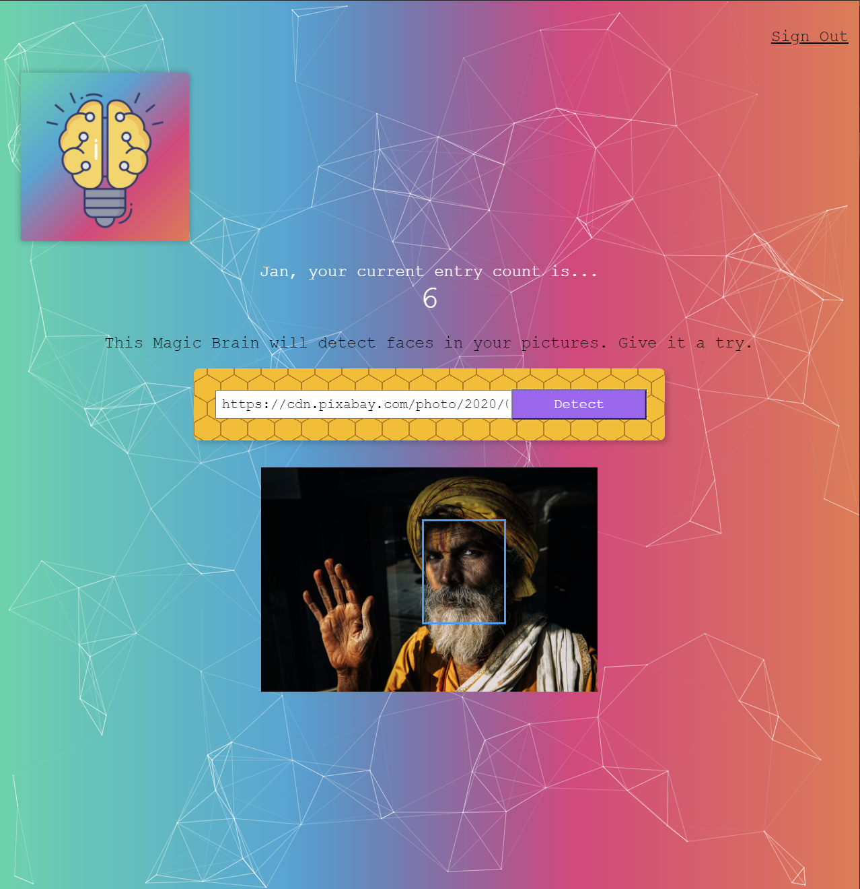

Jest to zbiór moich innych ciekawych pomniejszych projektów.

Aplikacja, która umożliwia wykrywanie twarzy, a także rejestracje oraz logowanie do konta znajdującego się w bazie danych w chmurze.
Na danym koncie użytkownik może przejrzeć, ile detekcji twarzy już wykonał (na bazie tutoriala).